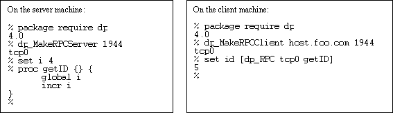
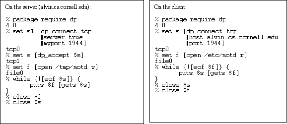
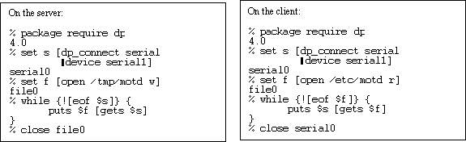
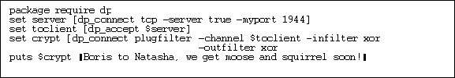
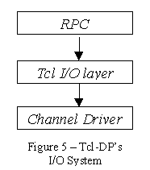

Redesigning Tcl-DP
Mike Perham
Brian C. Smith
Tibor Jánosi
Ioi Lam
Department of Computer Science
Cornell University
Ithaca, New York 14853
{mperham, bsmith,janosi,ioi}@cs.cornell.edu
Abstract
Tcl-DP is a loadable module for Tcl that adds advanced communication features to Tcl/Tk. Tcl-DP supports communication by serial links, IP-multicast, TCP, UDP, and email, contains a remote procedure call (RPC) mechanism, and supports the design of new protocols using modules called filters. Tcl-DP 1.0 [Smi93] was released four years ago and has since been used for numerous commercial and academic projects. With age, however, the code became so brittle that adding new features and porting to new versions of Tcl was nearly impossible. Furthermore, many of Tcl-DP’s original features were incorporated in the Tcl core, making them redundant in Tcl-DP. Hence, we decided to write the latest version of Tcl-DP (version 4.0) from scratch. In this paper, we describe the new features of Tcl-DP 4.0, its architecture and implementation, and problems we encountered with Tcl’s new I/O system.
The Tcl-DP API
The Tcl-DP API contains two main parts: commands for general communication and command for remote procedure call (RPC). Figure 1 demonstrates Tcl-DP’s RPC mechanism by showing how to implement a network-wide server for generating unique identifiers. The left side of the figure shows the code that is executed on the server, the right side shows the code that is executed on the client.

Figure 1 -- A Simple ID server
The first command executed on both client and server is the Tcl package command, which makes Tcl-DP library functions and commands available in the current Tcl interpreter. The server executes the dp_MakeRPCServer command, which creates a socket that is waiting for a client to connect. Finally, the server defines the getID command, which generates and returns a unique identifier.
The client connects to the server using the dp_MakeRPCClient command, which returns a handle that can be used to communicate to the server. Finally, the client invokes the getID command on the server using the dp_RPC command. This causes a message containing the command to be evaluated to be sent to the server, where it is evaluated and the results returned.
Tcl-DP also contains commands to support basic network communication. Figure 2 shows how to use Tcl-DP’s communication facilities to transfer the file /etc/motd from a client machine to the server (alvin.cs.cornell.edu).

Figure 2 – Simple network communication
After loading Tcl-DP using the package command, the server uses Tcl-DP’s dp_connect command to create a TCP socket that is waiting for a connection on port 1944. The server then issues the dp_accept command, which blocks until a client connects, and then returns a handle for the newly connected client. Once a client is connected, the server opens /tmp/motd, copies the data sent over the channel into it, and closes the file and socket.
The client connects to the server using dp_connect, giving the hostname and port number of the waiting server. After connecting, the client opens /etc/motd, copies it to the channel, and closes the file and socket.
Note that once a channel is opened, it is treated as any other file: it can be read from, written to, or checked for the EOF condition (which, in the case of TCP, this means the connection has been closed).
New Features
The features described above were available in earlier versions of Tcl-DP. In version 4.0, we added several new features. This section describes those features.
In addition to TCP, UDP and IP multicast, DP 4.0 supports communication via serial ports and email. No matter what its type, a channel is opened using the dp_connect command and supports the same input/output operations. The mechanism allows one channel to be substituted for another in most programs – only the channel creation and configuration options (issued through the Tcl fconfigure command) differ. For example, by changing the parameters to dp_connect and deleting the call to dp_accept in Figure 2, we can transfer the file over a serial line instead of a TCP connection, as shown in Figure 3.

Figure 3 – Communication over a serial connection
The Tcl-DP RPC mechanism has also been changed and enhanced. Recursive and out-of-order RPCs are now supported. This point will be covered in detail below. Perhaps the most important new ability is that RPCs can now be performed over any Tcl channel as long as it has been registered with the dp_admin command. More precisely, once a channel is created, the program can call dp_admin register chanID, which creates a file handler so that an inbound RPC request is automatically processed. Calling dp_admin delete chanID disables this behavior. The significance of this feature is that dp_RPC and dp_RDO can be performed over any channel, although dp_RPC should only be performed over reliable channels since packet loss can cause a program to hang while waiting for a response from the server.
Another new feature in DP 4.0 is filters. Filters sit between the program and the channel, transparently modifying data (e.g., encrypting/decrypting it). DP 4.0 has two types of filters: plugin filters and filter channels.
A plugin filter is designed for the common case where the data is modified using a functional interface. Encryption and decryption are examples of plugin filters. To create a plugin filter, the programmer call dp_connect plugfilter, passing in three parameters: the channel to use for input/output, and two filter functions, one for input and one for output.
Figure 4 shows how to use a plugin filter. In this example, a server accepts a connection from a client (the first three lines of code), and then attaches an exclusive-or (xor) filter to that channel to weakly encrypt the data. Any data written to the channel is transparently filtered by exclusive-or’ing it with a key (the key can be changed using the fconfigure command on the plugin channel). To decrypt the data, the user needs another xor plugin filter on the receiving side.
DP 4.0 comes with a uuencode/decode filter, a xor excryption filter, a hex to binary conversion filter, and a tclfilter plugin which allows any Tcl procedure to be used as a filter. New filters are easy to write (they require two procedures), and are registered using a C API.
The filter mechanism is general and powerful. For example, by using uuencode filters, binary data can be read from, or written to, channels. We have used filters to provide a simple command line interface to a video camera whose pan/zoom/tilt is controlled by a binary protocol over an RS232 interface. We believe it is possible to use plugin filters to provide APIs for secure communication, authentication, and gateways to binary RPC mechanisms.

Figure 4 – Attaching a plugin filter
Certain tasks are difficult or impossible to perform using plugin filters. For these cases, filter channels are appropriate. Filter channels are complete channels with configurable options and I/O routines. A filter channel is created using the dp_connect command, passing in the channel type as the first argument and a flag indicating the channel to use for input/output.
To understand why filter channels are needed, consider the following scenario. A user needs to transmit datagrams over a stream channel (e.g., TCP). Since the channel has stream semantics, the datagram boundaries will be lost in transmission. In other words, if the user sends two datagrams "message1" and "message2" over the channel, the receiver might read "mess" on the first read, and "age1message2" on a second read.
A simple way to keep the datagram boundaries is to build packetizer, which attaches a length field to each message. At the receiver, a depacketizer reads the length field and returns either a whole packet or nothing (in the case of a partial read). It is difficult to build a packetizer using plugin because they only provide functional filtering. In this case, a filter channel is used.
With filter channels, it is possible to build protocol stacks that provide, for example, flow control and guaranteed transmission over unreliable channels (any takers?).
Implementation
Channels
Since version 7.5, Tcl has performed all I/O via Tcl_Channels. Figure 5 shows a block diagram of Tcl-DP’s I/O system. The Tcl_Channel abstraction pushes all I/O operations into a channel driver, so that a generic set of operations can be performed on any communications method. For instance, to read data from a channel, one calls the Tcl_Read() function, which will invoke the channel driver’s input method to retrieve data available on that channel. DP 4.0 provides drivers for 5 channel types: TCP, UDP, IP multicast, serial ports and email. The dp_RPC and dp_RDO commands sit above the Tcl I/O layer, which allows us to use any channel for RPC communication.

RPC
The implementation of RPCs changed significantly in DP 4.0. The new mechanism allows RPCs to be issued over any Tcl channel, and handles duplicate or out of order return of RPCs. In addition, the protocol contains no binary data (unlike previous versions), which allows a Tcl-only implementation of RPC handlers using Tcl’s socket command. These changes make the new protocol incompatible with previous versions, but we felt the new features and bug fixes justified the incompatibility.
Figure 6 shows the layout of an RPC/RDO packet. Length is a six digit decimal string that gives the size of the entire packet, including the length field itself. Space is a delimiter between fields and is simply the space character. Type is a one byte token character that denotes the type of this packet. For types of packets are defined: RPC (‘e’), RDO (‘d’), error (‘x’), or return value (‘r’). ID is a six digit decimal string that specifies an identifier for the RPC message (and its return value). It is used in processing out-of-order RPCs, as explained below. Finally, msg is the Tcl command to be evaluated.
For example, the command dp_RPC tcp0 puts hi generates in the packet
" 23 e 1 puts hi"
| Length [6] | Space [1] | Type [1] | Space [1] | ID [6] | Space [1] | Msg [len-16] |
Figure 6 – RPC packet format
When a message arrives on an RPC channel, Tcl executes a file callback to process the message. This callback reads the message, buffering partial reads if necessary. It then processes the packet as follows:
Whenever an RPC is sent, an identifier (id) is generated and an activation record is created. This activation record tracks all currently executing RPCs, and allows for out-of-order and recursive RPCs. It is stored in a table, using id as an index. To understand the function of the activation record, consider the following example.
A Tcl-DP process sends an RPC (id=1) to host A. DP creates an activation record for the RPC and waits in an event loop for the return message. While waiting, another event (e.g., a timer event) triggers the issuance of a second RPC (id=2) to host B. Again, DP DP creates an activation record for the RPC and waits in a new event loop for the return message. If RPC #1 now returns, it can not be processed immediately, since the current event loop, and associated call stack, is for RPC #2. Thus, DP simply records the RPC return value in the activation record associated with RPC #1. When RPC #2 returns, it is marked as received, breaking the event loop and return to the original loop. This loop exits immediately, since the activation record indicates the RPC is received.
The surprising thing about the mechanism is that its expression in C is extremely elegant. The callback for processing a return value or error message just marks the appropriate activation record. The event loop simply processes one event until the associated activation record indicates the return value has been received.
Open Issues
While designing DP 4.0, we ran into several problems, which we discuss in this section.
Peeking and Tcl I/O
In previous versions of DP, peeking was allowed on socket reads. Peeking allows a read function call to return a portion of the input available on a channel without consuming the data. It is useful when processing input messages, since a message header can be read to decide which routine should process the message.
The Tcl I/O subsystem buffers all channel input. Unfortunately, this buffering also makes peeking on a channel impossible. Consider the following example: a user wishes to peek at the first 2 bytes of a 12-byte message on a UDP channel. Suppose the message is "123456789abc". Assume we fconfigure the socket for peeking, so that the read() system call does not consume the available data on the socket. When Tcl calls the channel’s input procedure to read the data on the socket; it reads 10 bytes, returning 2 bytes ("12") to the caller and buffering the rest ("3456789a"). When the program attempts to read the message out of the socket, Tcl will concatenate the 8 bytes of buffered data with data available on the socket, resulting in a 20 byte message ("3456789a123456789abc").
We provide a work-around for this problem using the dp_recv command, which allows direct, unbuffered access to a channel’s input procedure.
RPC over unreliable channels
The dp_RPC command blocks until a return value is received. In DP, the RPC procedure waits in an event loop, repeatedly calling Tcl_DoOneEvent() until an answer for the RPC is received. Unfortunately, this also means that when an RPC message (or its return value) is lost, the dp_RPC call will never return. Since DP 4.0 allows RPC over unreliable (e.g., UDP) channels, such an event is possible. We see three work-arounds for this case. First, one can always use dp_RDO to remotely invoke a command. Since dp_RDO does not block, the program will lock up when a message is lost. A second option is to use the –timeout flag of dp_RPC. This flag creates a timer event that marks the RPC’s activation record as complete after a specified time, causing the event loop to terminate and the dp_RPC call to return an error. The third option is to provide a filter channel that implements retransmission for the unreliable channel, and then issue RPCs over that channel. We have not yet written such a filter channel.
In this paper, we described the new features and implementation of Tcl-DP 4.0. Tcl-DP 4.0 is a dynamically loadable version of Tcl-DP which adds several new features including new channel types, channel filters, and better RPC support. Tcl-DP is freely available from http://www.cs.cornell.edu/Info/Projects/zeno/Tcl-DP/